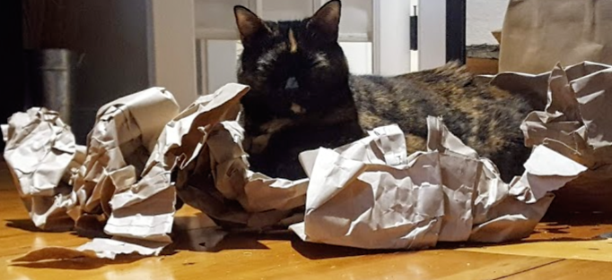
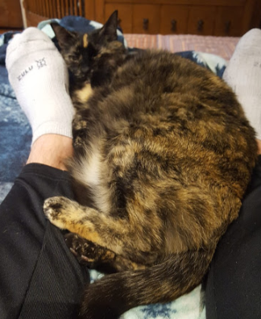
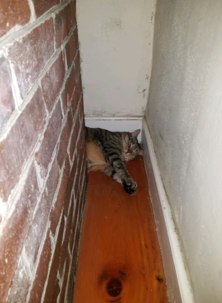
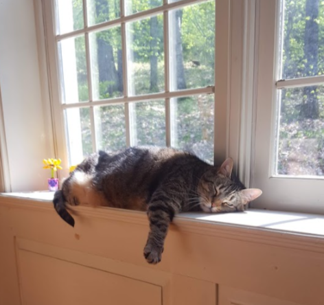

Welcome to my page all about my cats!

Goals of this page
This page is meant to introduce my somewhat overweight (but very cute) cats!Syver
One of my cats is named Syver (pronounced like silver, minus the "l"). She really likes licking things and is not at all shy.She also really enjoys sitting in inconvenient spots, as many cats do. For example, this time, she found a bunch of paper next to our fireplace and decided it would make a great napping spot:

She also enjoys helping me do my school-work:

Scamper
My other cat is named Scamper. She isn't quite as social as Syver, but is just as good at napping.She similarly really enjoys sitting in interesting spots. Take, for example, her tendency to sleep behind our fireplace during the winter. I am constantly amazed she doesn't find it way too hot back there!

She also enjoys sunbeams (we've decided she's sort of like butter -- warm her up a bit and she just sort of melts):

And those are my cats!